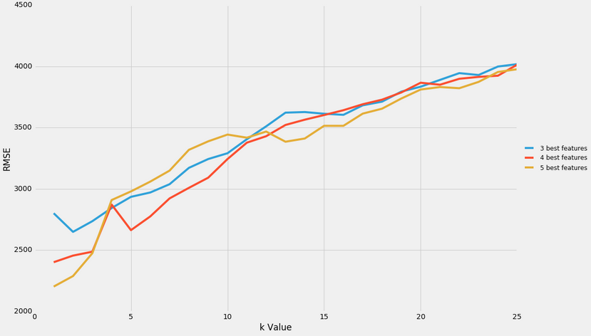
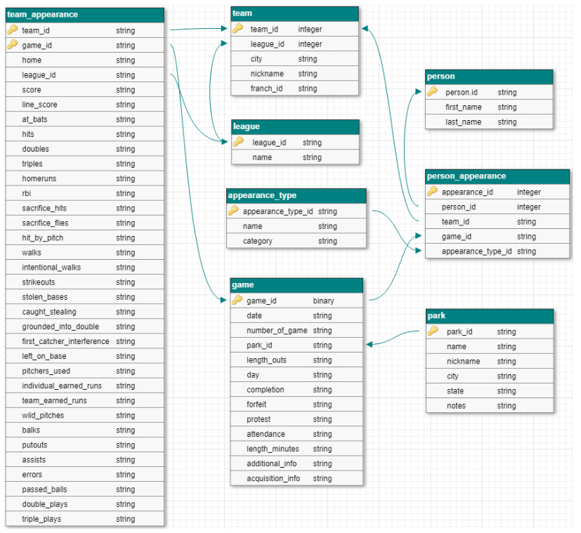
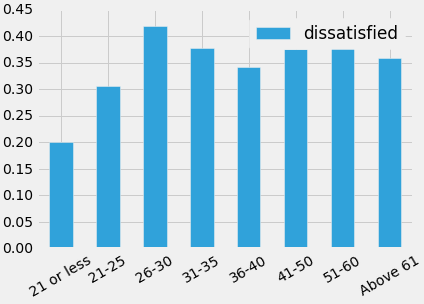
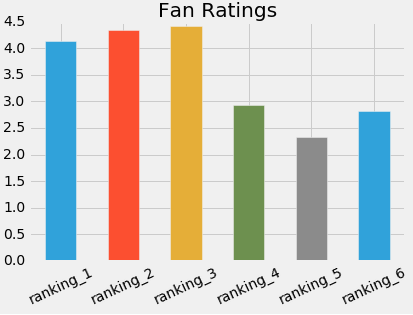

International Champions Cup 2019 Twitter Analysis
Tweets containing the hashtags #ICC2019 and #ManUTD were mined using the Twitter API and the twitteR package in R. Fan sentiments around the ICC matches taking place in Singapore were analyzed! The results of the sentiment analysis were also used to train a classifier using the Naive Bayes algorithm that predicted, with good accuracy, whether a tweet was generally positive, or negative.

Predicting Car Prices using K-Nearest Neighbors Algorithm
Information on the relationship between the price of a car and its various features, like its length or horsepower, were used to predict its price. The predictive power of our models were verified by measuring their Root Mean Squared Error, and we then further optimized the hyperparameters used until we arrived at the best models.

Baseball database building in SQL
PostgreSQL and SQLite were used in conjunction with R to query, modify, and construct a database containing information on Baseball games, based off a database schema which had been strategically designed to minimize redundancies while maximizing data integrity.

Employee Exit Survey Analysis
Generally, it's critical for a company to understand the factors that make employees leave. In the event that an employee leaves citing grievances with the company, the management should be alert as to whether this trend repeats among other employees, and if so, they should understand what kind of employee might be most likely to feel that way, and how they could go about addressing any underlying issues. This project sees us analyzing what kind of employees might be most likely to leave over their frustrations.

Star Wars Survey Review Analysis
Star Wars: Episode V - The Empire Strikes Back is widely thought of as the best movie of the franchise, but is this just based on hearsay, or is there hard data backing that up? In this project, sentiments of movie-goers about the Star Wars franchise were analyzed!